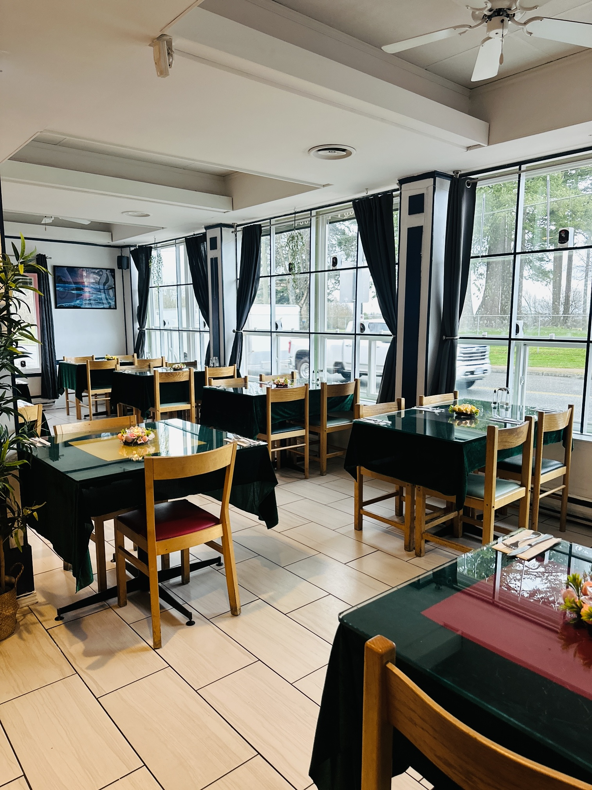
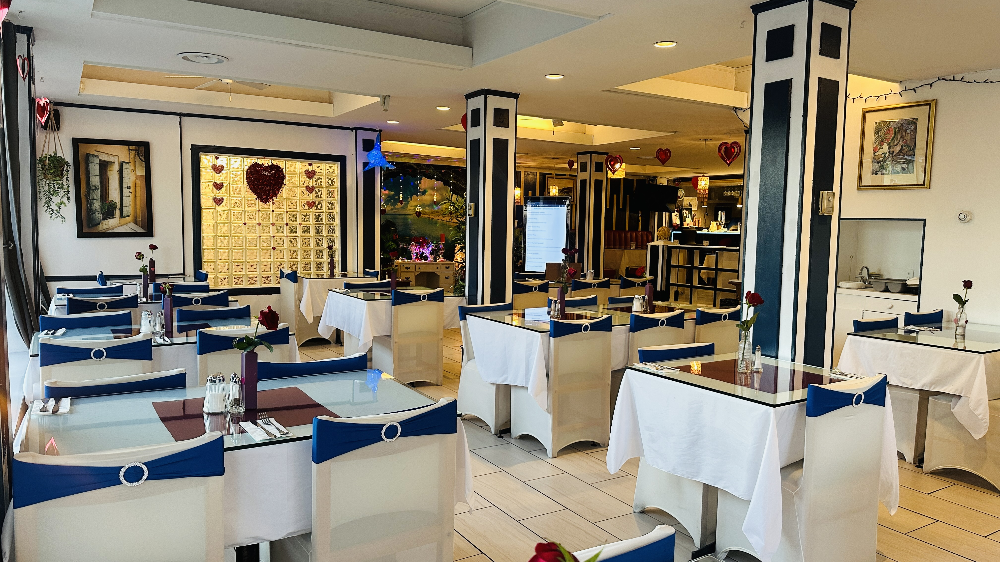
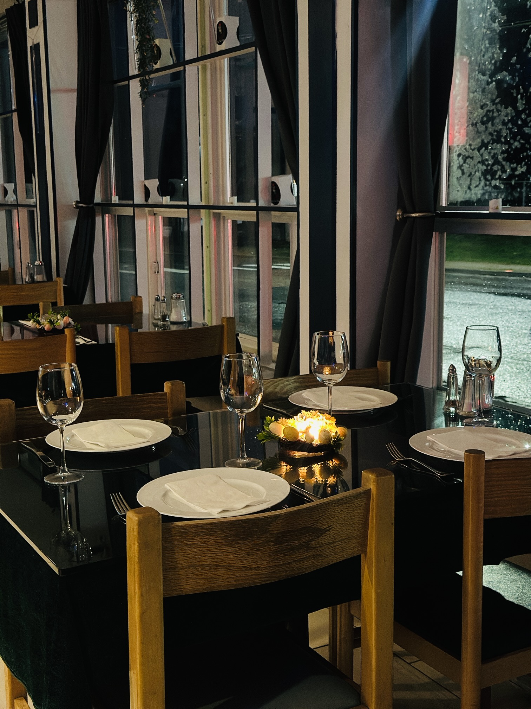
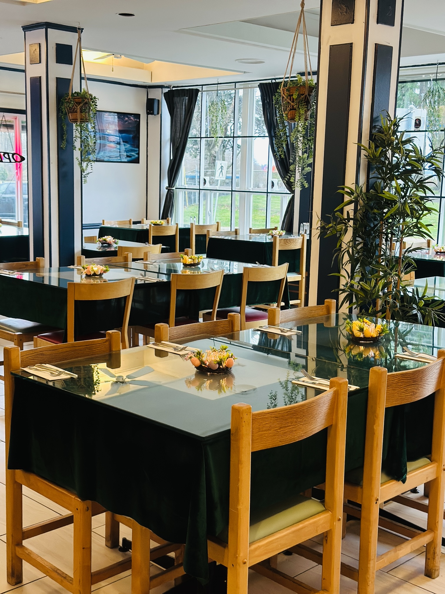
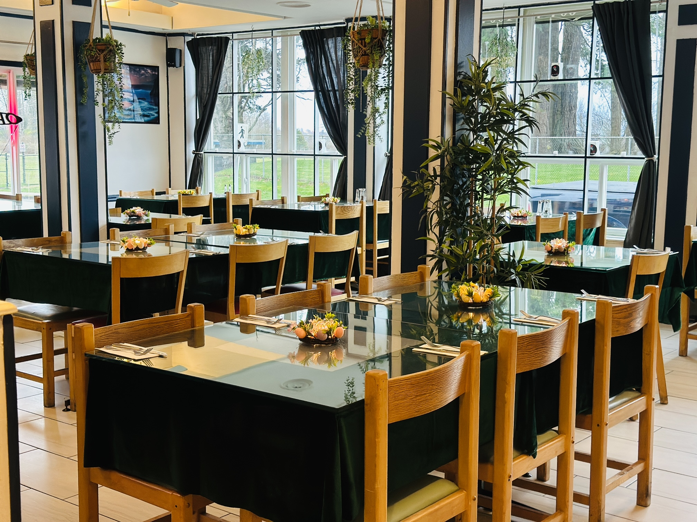
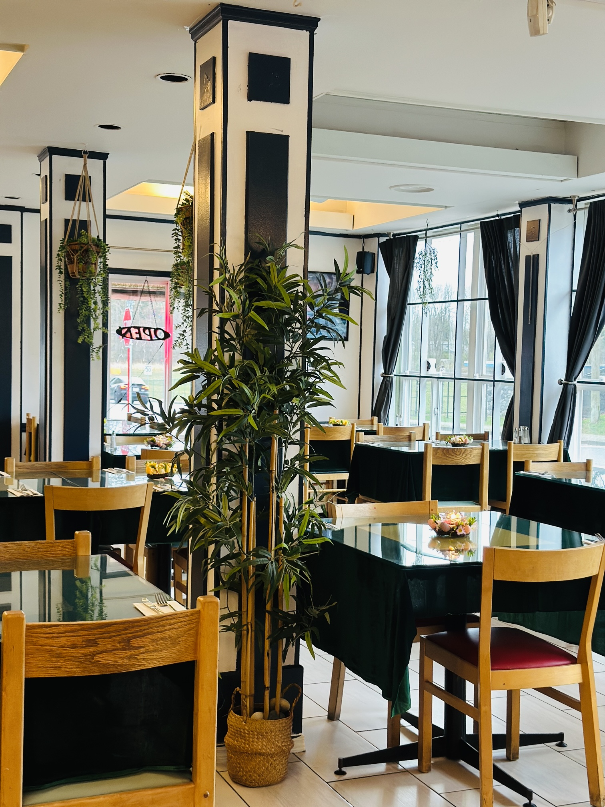
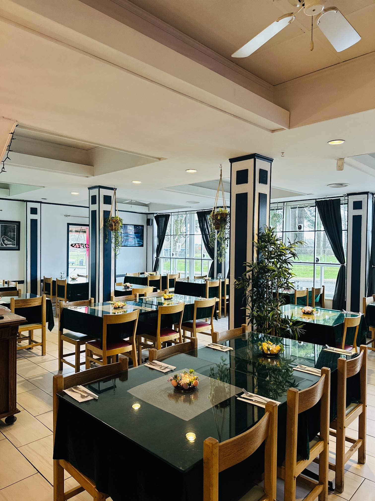

Handcrafted Recipes & Oceanfront Dining
Every plate celebrates local British Columbia ingredients, pairing wild-caught Pacific catches with curated Okanagan Valley wines.
Explore Full MenuNestled along the scenic Marine Drive waterfront in White Rock, British Columbia, White Rock Bistro brings together West Coast flair and timeless culinary traditions. Every dish highlights locally harvested Canadian seafood, fresh ingredients, and flame-seared premium cuts.
Our kitchen celebrates Canada’s rich natural bounty with mindful sourcing, elegant presentation, and a warm, inviting candlelight atmosphere designed for special occasions and memorable dining experiences.
Weekly Dining Experience
Fresh Ingredients




Chef's Signature Selections


Every plate celebrates local British Columbia ingredients, pairing wild-caught Pacific catches with curated Okanagan Valley wines.
Explore Full Menu
We collaborate directly with local Canadian growers and fisheries to maintain uncompromising freshness and sustainability.


Visual Tour




Guest Reviews
"If I could share 1 million stars I would. The best butter chicken I’ve ever tasted, and Pardeep is the most amazing waiter! Highly recommend for amazing prices and high quality food."
"White Rock Bistro is an amazing place with a beautiful ambiance and delicious food. Every dish is fresh, flavorful, and well presented. Perfect spot for family dinners!"
"Outstanding hospitality with friendly and courteous staff. The atmosphere was calm and elegant with light music and a peaceful vibe—a perfect spot for a romantic candlelight dinner."
"This restaurant offered a truly first-class experience. The food was absolutely delicious, with every bite full of amazing flavor. I would definitely visit again."
"If I could share 1 million stars I would. The best butter chicken I’ve ever tasted, and Pardeep is the most amazing waiter! Highly recommend for amazing prices and high quality food."
"White Rock Bistro is an amazing place with a beautiful ambiance and delicious food. Every dish is fresh, flavorful, and well presented. Perfect spot for family dinners!"
"Outstanding hospitality with friendly and courteous staff. The atmosphere was calm and elegant with light music and a peaceful vibe—a perfect spot for a romantic candlelight dinner."
"This restaurant offered a truly first-class experience. The food was absolutely delicious, with every bite full of amazing flavor. I would definitely visit again."
Get in Touch
15791 Marine Dr, White Rock, BC V4B 1E5, Canada